Metrics and Statistics
This tab gathers the quantitative diagnostics (coverage, MAE/RMSE/CCC/bias, distributions, scatter, rolling drift). Use it when you want numbers and concise plots for statistical agreement.
Coverage summary
The table below shows the available date range and count per dataset.
Metrics table (MAE, RMSE, CCC, bias)
Includes all days plus wet-day and windy-day subsets where relevant. Sort/filter to focus on a variable or subset.
Temperature (Temp_C)
Town_40177 shows near‑perfect agreement with Airport_1770 (R=0.99, RMSE=0.48, bias ~0), clearly the best performer. ERA5 is strong but cool‑biased (R=0.95, RMSE=1.42, bias −0.53). Buoy and VCS_On are similar in correlation (R≈0.92–0.91) with modest warm biases (bias +0.87 and +0.48, RMSE ~1.8).
Precipitation (Precip_mm)
VCS_On and Town_40177 show the best overall agreement (R=0.95 and 0.93; RMSE 3.68 and 4.08), with small biases. ERA5 has moderate skill but overestimates rain (R=0.74, RMSE=8.87, bias +2.62). Buoy performs weakest (R=0.61, RMSE=10.03, bias −2.99). On wet days (>1 mm), performance drops for all datasets; VCS_On remains strongest (R=0.93, RMSE=6.48), Town_40177 is close (R=0.91, RMSE=6.83), while ERA5 and Buoy degrade substantially.
Wind speed (Wind_Spd_ms)
On all days, Town_40177 has the highest correlation (R=0.885) but a negative bias (−0.81); VCS_On has the lowest RMSE (0.93) and near‑zero bias (+0.14). Buoy is moderate (R=0.78, RMSE=1.29, bias +0.65). ERA5 is weakest (R=0.61, RMSE=1.95, bias −1.49). In the top 10% windy subset, all datasets degrade sharply; Town_40177 retains the highest R (0.73) but still underestimates extremes, VCS_On has the lowest RMSE (1.50), Buoy is weakly correlated, and ERA5 performs poorest (R=0.20, RMSE=3.71, bias −3.46).
Distribution and bias shape
Density distribution overlays show bias or spread differences
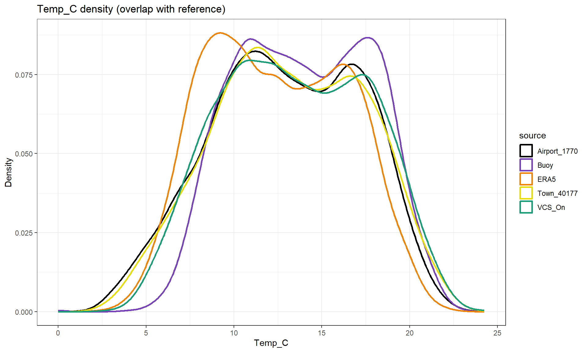
The distributions are broadly similar, but ERA5 is shifted slightly cooler (left of the reference), while Buoy and VCS_On are shifted warmer (right of the reference). Town_40177 most closely overlaps the reference distribution. Differences in tail thickness suggest small changes in variability, but the overall temperature range is consistent.

Density distribution overlays of daily wind speed (m s⁻¹) for each dataset on the overlapping period with the reference. The reference distribution is shown for comparison.
ERA5 is shifted to lower wind speeds, indicating a systematic low‑wind bias. Buoy and VCS_On have heavier right tails than the reference, suggesting higher frequency of moderate–strong winds. Town_40177 is closest to the reference peak but slightly under‑represents higher winds.
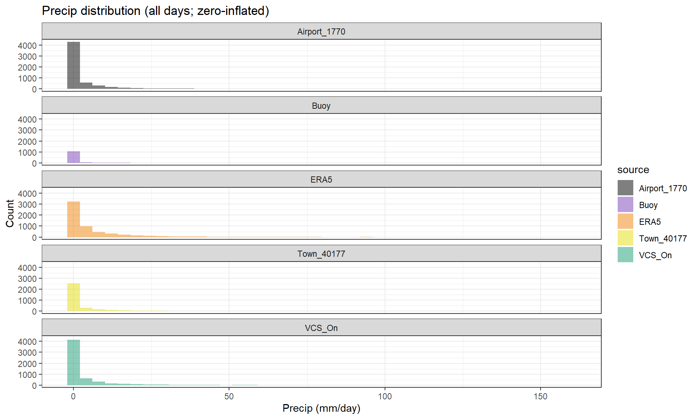
Histogram of daily precipitation (mm) for all datasets, including dry days (zero‑inflated). This highlights differences in event frequency and the heavy‑tail behavior of rainfall extremes.
All datasets are strongly zero‑inflated, but ERA5 shows a longer right tail and more moderate rainfall counts, consistent with wet bias. Buoy has fewer non‑zero counts, indicating under‑detection of rainfall. Town_40177 and VCS_On are closer to the reference, with similar tails and event frequencies.
Scatter vs reference (1:1)
Check linear agreement and systematic bias; points should cluster along the 1:1 line.
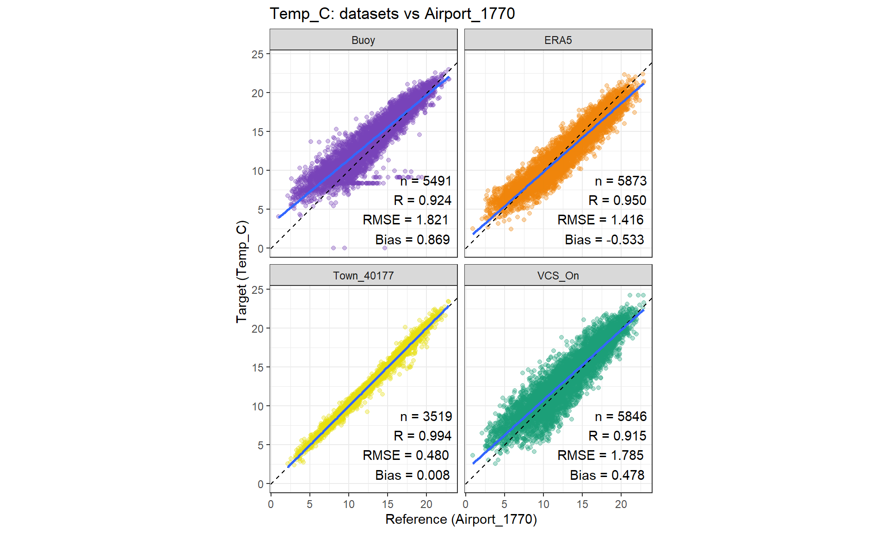
Scatter plots of daily temperature (°C) for each dataset against the Airport_1770 reference. The dashed line indicates 1:1 agreement and the solid line is the fitted regression. All datasets show strong linear relationships; Town_40177 has the tightest agreement and minimal bias, ERA5 shows a small cool bias, and Buoy/VCS_On show modest warm biases. Each panel reports n, R, RMSE, and bias.
Temperature agreement is strong across all datasets, with near‑linear relationships. Town_40177 has near‑perfect agreement (R≈0.99, very low RMSE and near‑zero bias). ERA5 shows high correlation and low RMSE with a small cool bias. Buoy and VCS_On remain strongly correlated but show warm biases relative to the airport.
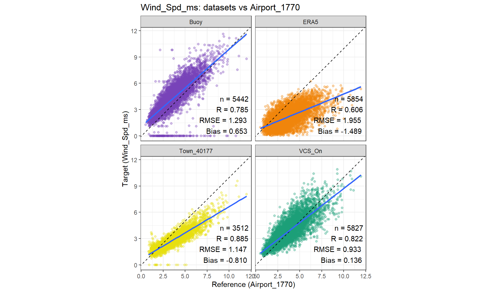
Scatter plots of daily wind speed (m s⁻¹) for each dataset against the Airport_1770 reference. The dashed line indicates 1:1 agreement and the solid line is the fitted regression. Town_40177 and VCS_On show the highest correlations and lowest errors, while Buoy exhibits a modest positive bias and ERA5 shows a pronounced negative bias with the largest RMSE. Sample size (n), correlation (R), RMSE, and bias are reported in each panel.
All datasets show positive associations with the airport reference, but performance differs. Town_40177 and VCS_On show the strongest correlations and lowest errors, with regression lines closest to the 1:1 line. Buoy shows moderate correlation and a positive bias (overestimation), while ERA5 shows weaker correlation and a strong negative bias (underestimation) with the largest RMSE among the four.
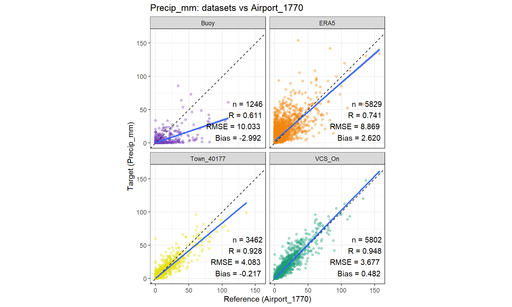
Scatter plots of daily precipitation (mm) for each dataset against the Airport_1770 reference. The dashed line is 1:1 agreement; the solid line is the fitted regression. VCS_On and Town_40177 show the highest correlations and lowest RMSE, ERA5 shows moderate agreement with a positive bias, and Buoy shows the weakest agreement and the largest error. Panel annotations report n, R, RMSE, and bias.
Rainfall agreement is highly variable across datasets. VCS_On and Town_40177 show the strongest linear agreement (high R, low RMSE), with regression lines close to 1:1. ERA5 shows moderate skill but a positive bias (overestimation). Buoy has the weakest agreement, largest RMSE, and a negative bias, reflecting poorer correspondence with the airport precipitation.
Rolling diagnostics (drift through time)
Rolling diagnostics reveal gradual offsets or drift through time (look for breaks away from 0 bias or a changing correlation). This answers “does it shift seasonally?”
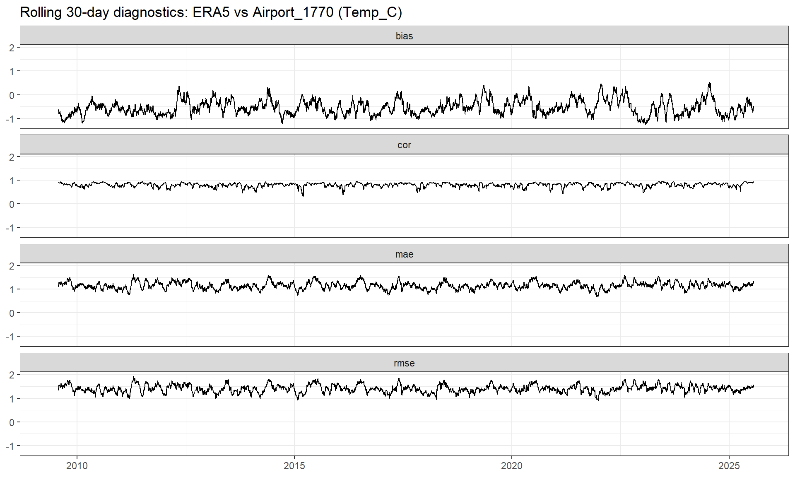
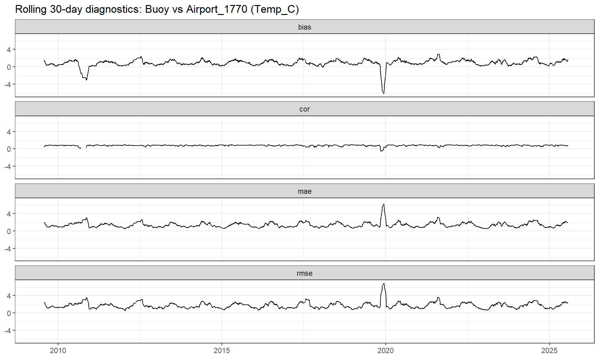
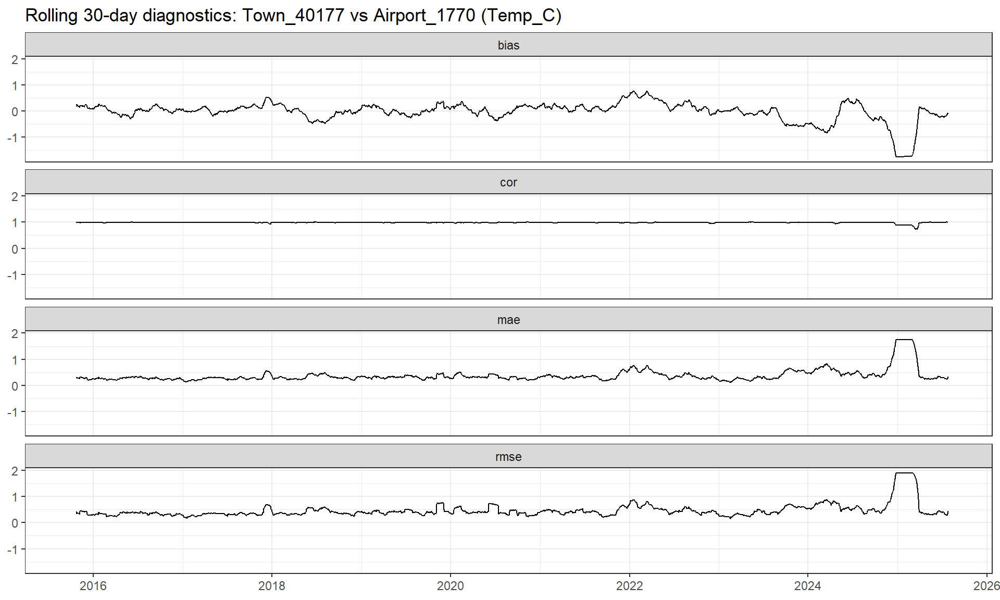
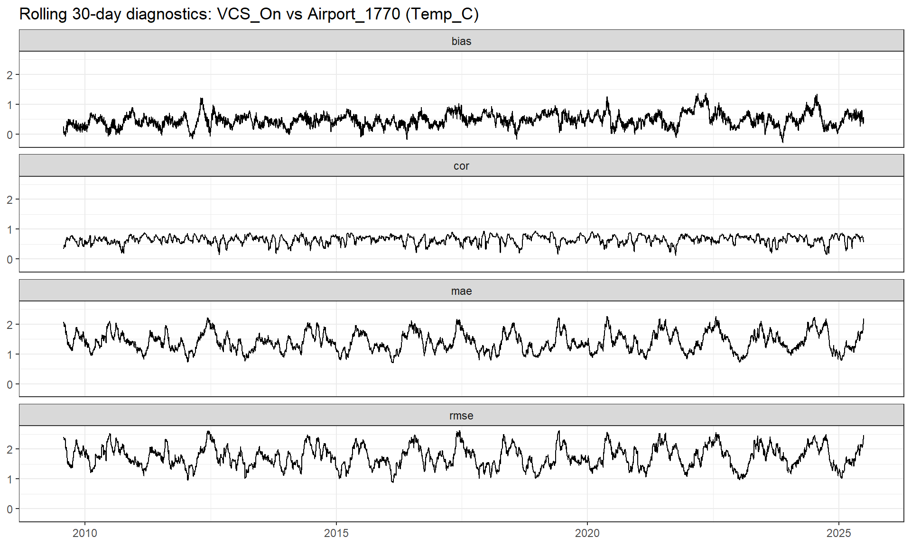
ERA5 temperature
The bias is consistently negative, indicating ERA5 is cooler than the airport on average. Correlation remains moderate to high with intermittent dips, while MAE/RMSE show modest oscillations without extreme spikes, suggesting stable but slightly biased performance.
Persistent cool bias: ERA5 temperatures are systematically lower than Airport_1770 across the record. Stable agreement: Correlation is generally strong with short‑lived decreases, indicating good temporal tracking most of the time. Moderate error levels: MAE/RMSE remain relatively steady with small oscillations, indicating consistent performance rather than episodic failures. Implication: ERA5 is suitable for temperature variability but should be bias‑corrected for absolute values.
Buoy temperature
Bias is mostly positive, indicating the buoy is generally warmer than the airport, with two pronounced negative excursions that coincide with sharp drops in correlation and spikes in MAE/RMSE. Outside these events, correlation is high and errors are low, suggesting strong agreement.
Warm bias overall: Buoy temperatures tend to exceed airport temperatures. Two distinct anomalies: Short periods show large negative bias and severe error spikes, consistent with data issues or local effects. High consistency otherwise: Correlation is typically high and errors small outside the anomalies. Implication: Buoy temperature is reliable for most of the record, but flagged anomaly windows should be excluded or corrected.
Town temperature
Bias is near zero for much of the record, indicating close agreement, but a pronounced late‑record negative bias coincides with a drop in correlation and sharp increases in MAE/RMSE. This indicates a localized period of degraded performance.
Near‑zero bias for most years: Town station closely matches the airport on average. Late‑record deterioration: A marked negative shift appears near the end of the series, with a concurrent increase in error and reduced correlation. Strong correlation overall: Temporal coherence is high except during the late anomaly. Implication: Town_40177 is generally consistent with the airport, but recent data should be checked for change or quality issues.
VCSN temperature
Bias is consistently positive, indicating VCS_On is warmer on average. Correlation is moderate and variable with frequent dips, while MAE/RMSE display recurring oscillations without extreme spikes, suggesting stable but less tightly aligned agreement than station‑station comparisons.
Consistent warm bias: VCS_On temperatures exceed airport values across the record. Moderate correlation: Agreement in day‑to‑day variability is weaker and more variable than the station comparisons. Stable error magnitudes: Errors fluctuate cyclically but lack large outliers. Implication: VCS_On can represent temperature trends but benefits from bias correction and cautious use for daily‑scale accuracy.
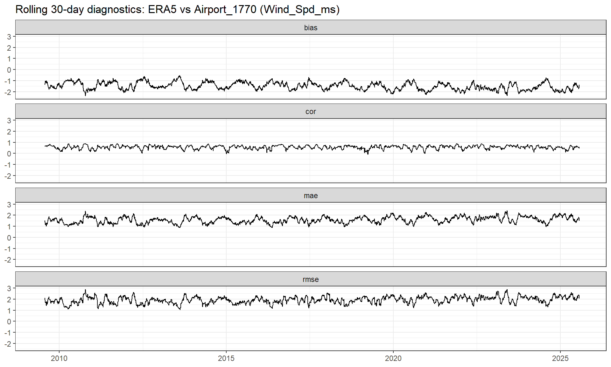
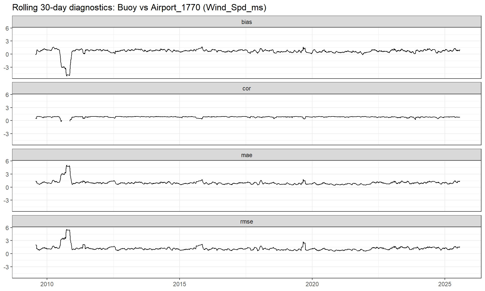
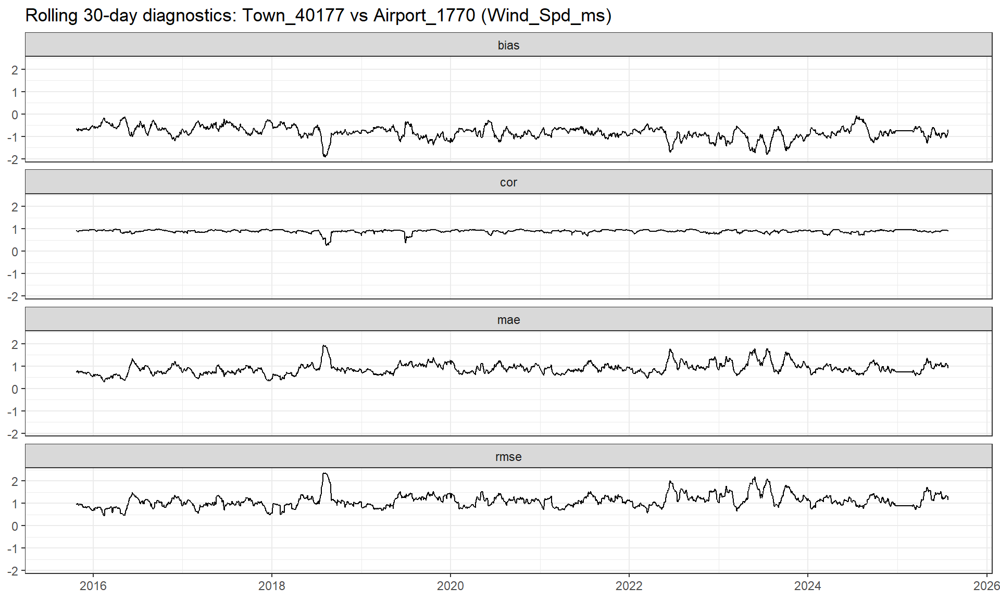
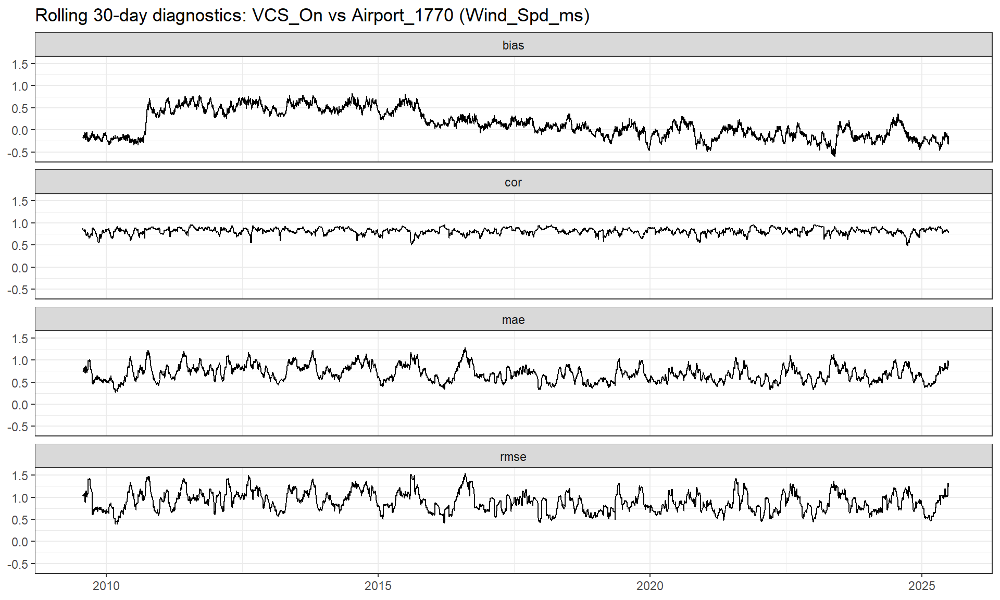
Rolling 30‑day diagnostics for daily wind speed (m s⁻¹) comparing Town_40177, ERA5, VSCN and Buoy data to the Airport_1770 reference. Each panel shows the 30‑day moving statistic of (top) mean bias (dataset − Airport), (second) Pearson correlation, (third) mean absolute error (MAE), and (bottom) root mean squared error (RMSE).
Town wind
For the Town source the bias series is persistently negative, indicating a systematic low bias in Town_40177 relative to Airport_1770. Correlation remains high for most of the record but exhibits intermittent drops, coinciding with short periods of increased MAE/RMSE. Error magnitudes are generally modest but show episodic spikes, suggesting periods of reduced agreement that are transient rather than sustained. Key points for a Results section (based on the plot)
Consistent negative bias: The rolling bias remains below zero throughout the record, indicating Town_40177 systematically underestimates wind speed relative to Airport_1770. Generally strong temporal agreement: Correlation is typically high (near the upper range of the axis), implying that day‑to‑day variability is captured well most of the time. Intermittent degradation: Several short intervals show sharp drops in correlation accompanied by peaks in MAE and RMSE, indicating brief periods of poorer agreement. Errors are episodic, not persistent: MAE/RMSE spikes appear as isolated events rather than long‑term shifts, suggesting the overall relationship is stable but occasionally disrupted (e.g., by local site effects or data issues). Practical implication: Town_40177 is suitable for capturing wind variability trends, but absolute values should be bias‑corrected if used for magnitude‑sensitive applications.
ERA5 wind
For the ERA5 source the bias is consistently negative across the record, indicating systematic underestimation of wind speed by ERA5. Correlation fluctuates around moderate values with frequent short‑lived drops, while MAE and RMSE exhibit pronounced seasonal‑scale oscillations and episodic peaks, indicating time‑varying agreement rather than a stable error structure.
Persistent low bias: ERA5 wind speeds are consistently below the airport reference (negative bias throughout), suggesting a systematic underestimation. Moderate, variable correlation: Agreement in day‑to‑day variability is weaker and more volatile than the station‑to‑station comparison, with frequent dips in correlation. Pronounced temporal structure in errors: MAE/RMSE show clear oscillatory behavior and repeated peaks, indicating seasonally varying performance. Episodic degradation: Several short windows show sharp drops in correlation and elevated errors, implying transient mismatches or regime‑dependent performance. Implication: ERA5 is useful for capturing broader temporal patterns in wind but should be bias‑corrected and evaluated seasonally before use in applications sensitive to wind magnitude.
VCSN wind
Bias shifts over time from slightly positive in the early record toward near‑zero and then slightly negative values, indicating a gradual drift in mean offset. Correlation remains moderate to high with intermittent dips, while MAE/RMSE display recurring oscillations without large spikes.
Slow bias drift: Mean bias trends from positive to slightly negative across the record, indicating gradual change in relative wind magnitude. Consistent but variable correlation: Correlation is generally moderate–high with periodic drops, reflecting time‑varying agreement. Stable error magnitudes: MAE/RMSE show cyclical variability but no extreme excursions, suggesting steady performance without major anomalies. Implication: VCS_On captures wind variability reasonably well, but bias may need time‑dependent adjustment.
Buoy wind
A pronounced early‑record anomaly is evident as a sharp negative bias, collapse in correlation, and a simultaneous spike in MAE/RMSE. Outside this episode, bias remains small and positive, correlation is generally high, and errors are comparatively low with occasional minor excursions.
Early anomaly dominates: A short early interval shows extreme disagreement (large negative bias, correlation collapse, large MAE/RMSE), indicating a likely data issue or calibration mismatch in that period. Otherwise strong agreement: After the anomaly, correlation stays high and error levels are low, implying good temporal coherence between buoy and airport winds. Small systematic bias: The buoy shows a slight positive bias relative to the airport in the stable period. Transient deviations only: Later deviations are modest and short‑lived, suggesting the relationship is stable after initial issues.
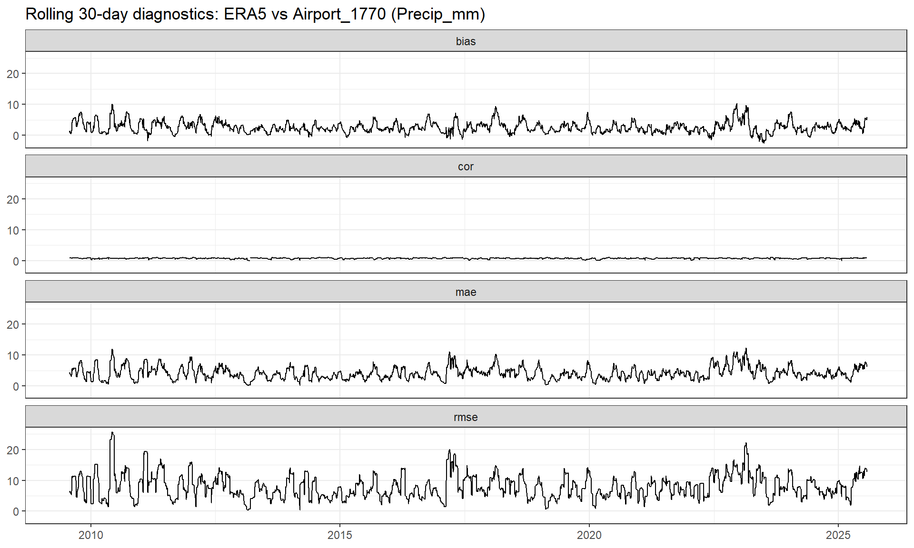
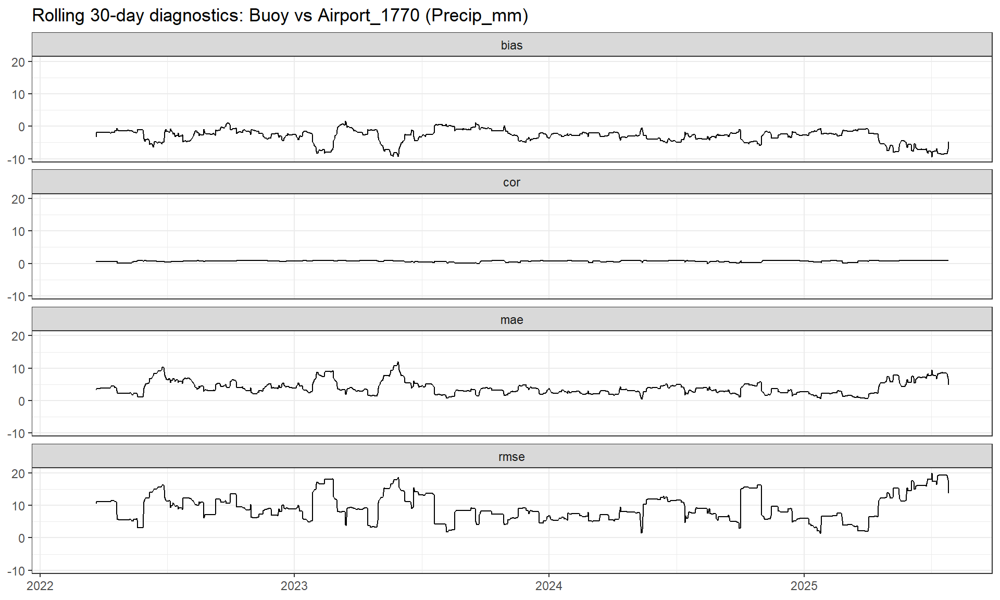
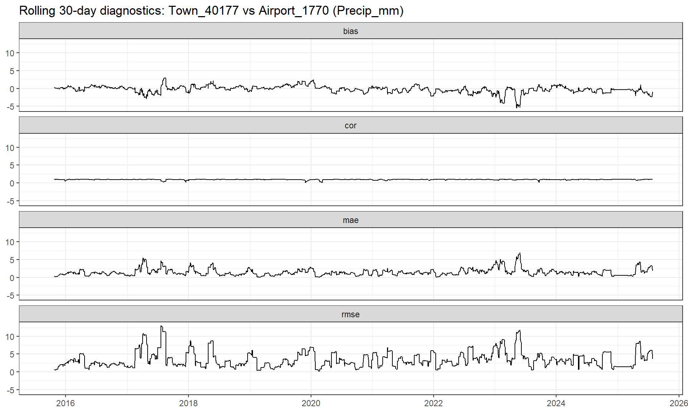